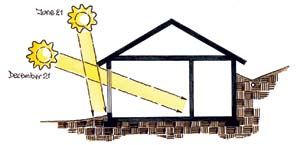
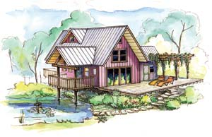
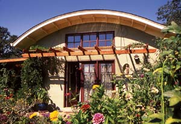

Go Solar And Save Big!
Every homeowner needs to know that passive solar design results in huge savings on energy bills.
By Clarke Snell
August/September 2006
Great news! You have free access to a source of energy that can save you thousands of dollars on your home’s heating and cooling bills. You can harness this eco-friendly energy source using inexpensive, readily available technology, and it comes with a lifetime guarantee.
The energy source is the sun, and the technology is passive solar design- the conscious manipulation of building temperature by using the sun’s direct energy. If you are planning to buy a new home or remodel your current residence, put passive solar design on your “must-have” list.
Everyone is already aware of some of the advantages of solar design: We all appreciate the coolness of a shady porch or patio in the summer, or the warmth of a sunny window in the winter. But most people are not aware of the huge difference solar design can make in the amount of energy needed to heat and cool our homes. In most situations, a well-designed passive solar home stays cool in the summer without air conditioning, and in the winter it requires much less energy to heat. The combination of a woodstove and solar design is often enough to keep a house comfortably warm, even in very cold climates.
The best aspect of solar design is that if you’re building or remodeling a home, you can incorporate it at little or no extra expense. With oil and natural gas prices rising, and power blackouts becoming more common, it now makes more sense than ever to take advantage of natural heating and cooling rather than depending on fossil fuels.
After all, we already heat and cool our homes with solar energy. That’s because the fossil fuels we burn today are nothing more than stored solar energy. Plants captured that solar energy through photosynthesis, and then - over millions of years - heat and pressure transformed dead plants and animals into deposits of coal, oil and natural gas. I wish I had the biggest bullhorn ever made (solar-powered, of course) to broadcast this message: There’s a better way! Everyone should use solar design to save energy, save money and reduce pollution.
Location, Location, Location
In nearly every kind of climate, heating and cooling a building is a challenge. Maintaining a stable temperature for a tiny air mass (the inside of your house) is a difficult undertaking because of the constantly fluctuating temperature of a much larger surrounding air mass (the great outdoors). Unlike most other approaches, though, solar design makes the sun an ally rather than an adversary in this task; the key is adapting the design to the specific location where you live.
Building site. Two facts about the sun make solar design possible. First, the sun’s path through the sky changes throughout the year. Second, this path repeats the same cycle every year. That’s why for any given building site we know exactly where the sun will be during every season, so we can design our homes to capture the sun’s heat in the winter and block it during the summer.
In northern climates where winter heating is necessary, the winter sun is conveniently lower in the sky, so we can point the majority of the building’s windows toward that free heat source. The low angle of the sun allows a maximum of solar heat into the building through windows, which will then be absorbed by the floor and walls. In the summer, the sun will be higher overhead, so the roof can be designed to block much of the unwanted solar heat. (See illustration.)
In southern climates, where cooling is the main concern, the sun is higher in the sky year-round. This makes it even easier to use building elements such as roof overhangs or porches to block the sun and keep the building cooler. If you are choosing a piece of property to build on, you also can take advantage of hills, trees and other buildings to block unwanted summer sun and winter winds.
Building shape. The right shape also is important. In a climate with cold winters, houses that are long and thin on their east-west axis are best because they expose more wall surface to the south, where it will be warmed by the sun in winter (see illustration).
This building shape also helps houses stay cool in the summer, when the sun is higher in the sky, because it has little wall surface on the east or west sides, which will be most exposed to the sun’s heat at this time of year.
But in a warm climate where summer cooling is the main concern, houses that are compact in shape are easier to cool than long, thin houses, because they expose less interior area to direct sun from any direction (see illustration). In the absence of natural features such as hills or shade trees, you also can use the shape of the house to shade living space by building an interior courtyard or covered north veranda.
Thermal Mass And Glass
Designing to take advantage of the sun’s position during the year has a huge effect on a building’s temperature while the sun is out, but you’ll also benefit from building a house with materials that store solar energy effectively.
Thermal Mass. Everything stores temperature, but some things store it better than others. Dense materials - such as stone, concrete, bricks and earth - are known as thermal mass, and they excel at heat storage. Walls and floors built with these materials act as heat sinks that help maintain a comfortable interior temperature throughout the year. This works because in any environment, heat will move from warmer to cooler objects.
In the winter, thermal mass located inside the house in front of south-facing windows will absorb and store the direct heat of the sun. After sunset, the mass slowly releases heat into the air to warm the building. During the summer, that same mass stays cooler because it is shaded by the roof and overhangs, and it pulls heat out of the interior air during the day. At night, when windows are open to allow cooler air inside, the mass releases that heat back to the air. A 4-inch thick concrete slab floor is a good option for thermal mass if you don’t cover it with insulating materials such as carpet. Earthen floors also work well. Additional mass also can be added to interior walls, with the first 2 inches in depth from the surface doing the most good. Interior brick or cob walls, thick plaster on straw bales, or plastered drywall are all possibilities for interior thermal mass.
In some warm climates, thermal mass also can be used as a kind of dynamic insulation in exterior walls. In the desert, where it is very hot during the day and significantly cooler at night, many homes are built from adobe, cob, rammed earth or concrete. Heat absorbed by the dense walls of these homes slowly moves inward during the day. But before it has a chance to reach the interior, the sun goes down, and exterior temperatures begin to drop. When the outside temperature drops below the inside temperature, the heat stops pushing inward. This happens because heat always moves toward cold. The heat then moves back toward the outside, causing the wall to cool down.
On the other hand, thermal mass isn’t always useful. For example, in a tropical climate where it is breezy, humid and shaded by forests, direct sunlight isn’t the issue, so thermal mass wouldn’t be an effective way to cool your home. In this case, solar design would focus on ventilation.
Windows and glass doors. The careful placement of glass doors and windows is the next step in tapping solar energy. To capture heat, you’ll want to place windows and glass doors along the long south wall to allow the low winter sun to shine in. Be conscious that glass on the east, west and north sides will let more heat escape than it will collect from the sun during the winter. The most common passive solar design mistake is to use too much southern glass and not enough mass. Fortunately, a lot of information is available about how to compensate for variations of climate and design. Do your research and enlist the help of experts.
Natural Cooling
For summer cooling, you’ll want to block direct sunlight, but open doors and windows to let in wind. Using air movement for cooling can be difficult to fine- tune because wind is the natural element that varies most from site to site. The most effective research you can do when building a home is to spend a lot of time on-site during different seasons to understand how the wind moves there, then place windows and doors accordingly. Still, many generalities apply. For example, window screens reduce air flow by up to 50 percent!
In the summer, the more shade you can create, the cooler your breezes will be. Large porches and roof overhangs over windows and doors are a good way to create shade. Of course, trees and other vegetation also create shade.
Plants around the house also provide evaporative cooling, a process by which hot air is cooled by taking on water vapor, in this case from the constant transpiration of water by plants. Various studies have shown that a large hardwood tree can evaporate 100 or more gallons of water a day, creating a cooling effect equivalent to 10 window-unit air conditioners running for 20 hours. This, too, is tapping solar power, which is fueling photosynthesis in the tree.
Slowing Heat movement
To maintain temperature, we have to slow the inevitable movement of heat. Materials placed to slow the movement of heat are generically called insulation. However, heat moves in different ways, so insulation needs to be chosen based on the type of heat movement you’re trying to prevent.
Light, airy materials such as fiberglass and straw bales slow conduction. Conduction is the transfer of heat from molecule to molecule through a material, such as the metal in a pot on a stove. It is best slowed by materials that form a complicated web that the heat must traverse. This is the principle behind most materials we normally label as insulation, including fiberglass, polystyrene foam and forms of organic cellulose such as cotton, straw bales and shredded newspapers.
Stopping air leaks slows convection. Convection is the transfer of heat by physically moving molecules from one place to another, such as the air that rises in a fireplace chimney. Many materials won’t let air move through them: Wood, concrete and plaster, to name a few, allow basically no convective heat loss through their volume. Problems often arise, however, at joints between and breaks in these and other materials. Windows, doors, plumbing vents and electrical boxes are all potential convective weak points. Once identified, though, they can be sealed effectively. One huge source of convective air loss is opening the front door. This can be greatly reduced by creating an entry room, sometimes called an airlock or mudroom, that isolates the living space from the outside.
Reflective surfaces slow radiation. Radiation is the direct transfer of heat by means of electromagnetic energy: The sun heats the Earth through space with radiant energy. Heat absorption from radiation is best slowed by using reflective materials. How reflective a surface is depends on its color. A white surface is an effective reflector of light, but a poor reflector of heat. On the other hand, a shiny metallic surface is a good reflector of light and heat, but a poor emitter of heat. If you’re trying to cool a home in the summer, a shiny metal roof does a good job of reflecting the light and heat of a sunny summer day away from the building, but at night a white roof will release the heat trapped in the attic more rapidly than a shiny metal roof.
More Benefits of Passive Solar
We’ve quickly outlined some of the basics of solar design, but they only begin to describe the benefits of living in a passive solar home. Here are a few other advantages of using solar design strategies.
Long-term savings. Ron Judkoff, director of the Center for Buildings and Thermal Systems at the National Renewable Energy Laboratory, says, “There is nothing intrinsically more expensive about passive solar construction. In fact, basically the same materials used to construct many modern homes can simply be rearranged to make a passive solar building.”
Once built, passive solar buildings are cheaper to operate, so they will save you money - and lots of it - over the life of the building. “It’s relatively easy in most climates to create a passive solar building that will use 30 percent to 70 percent less energy than a comparable nonsolar design,” Judkoff says.
Attractive home designs. A common misconception about passive solar homes is that they are designed like space-aged cubicles. Older books on passive solar homes are full of wild, complex designs, including such things as retractable exterior walls and roof pond storage masses with movable nighttime covers. Forget that stuff! Passive solar homes can be designed to fit almost any style or aesthetic.
“Far from being limiting, passive solar design gives you a wealth of building elements to work with,” says Greg Jackson, an architect and adjunct professor of sustainable design at the University of Kentucky. “Overhangs, roof articulation and a focus on the relationship between sunlight and glass all add visual interest to a building.”
Buildings can be retrofitted. You don’t need to have the perfect site or the opportunity to build a new home to take advantage of passive solar design, because you can make meaningful adjustments to an existing building. Any of the following can have significant effects on the thermal performance of your house: Major work such as a complete solar retrofit; intermediate actions such as adding windows and an interior mass wall facing the winter sun; or simple do-it-yourself changes such as adding arbors with deciduous vines over windows and doors.
“Passive solar additions to existing buildings bring an excellent return on your initial investment,” says builder and educator Marcus Renner of Appropriate Building Solutions. “A well-designed sunspace addition, for example, will cut energy bills by providing both solar heat and illumination. It will also create a cozy room that increases floor space and provides a great environment for plants. As if that weren’t enough, all of these features add value to your house.”
The bottom line. As heating and cooling costs rise and the scramble for dwindling fossil fuels escalates, it’s time to tap the elegant, common-sense principles of passive solar. As corny as it may sound, we really can build a better world. The sun is shining down on us with the answer; all we have to do is soak it up.
Solar Design for Cold Climates
These solar design strategies can be effective in a climate with cold winters and moderate summers. The greatest need here is winter heating, and the building will be oriented to the south.
- Choose a building site with no obstructions to the south for complete access to the low angle of the winter sun. Another plus is a site with trees that can block prevailing winter winds, which are usually from the north.
- Chose a design with a long south wall facing within 15 degrees of true south.
- The house should include ample thermal mass (dense, heat-storing materials such as concrete or earthen floors). Consider building an earth berm on the north side for more thermal mass.
- Most of the windows should be to the south for access to the winter sun. Minimize windows on the east and west sides and place very few in north walls.
- Use shorter overhangs over south windows for better winter heat gain and ample overhangs over other windows for shading.
- Cover windows and glass doors at night with insulating shutters or insulated drapes to prevent heat loss.
- Maximize insulation in walls and ceiling. Use rigid insulation under the floor and around its edges.
- Consider using a dark roof surface to pick up solar gain in winter.
- Mechanical ventilation will probably be needed in winter; a heat recovery ventilator, which preheats incoming air, is a good option.
- Consider a porch or plantings to the west to block afternoon sun in summer.
Solar Design for Warm Climates
These solar design strategies can be effective in a climate with mild winters and hot summers. Cooling is the main need, and more of the living space should be oriented to the north.
- Look for a site where the house can be positioned with plenty of outdoor living space to the north. Another plus is a site with trees to the east and west to block morning and afternoon sun.
- The house should be compact in shape, with less wall area exposed to the sun. Build shaded porches and patios.
- Focus on outdoor living space to the north and east for cooking, sleeping and relaxing. Comfortable shaded verandas are inexpensive additions that make a house feel luxurious.
- Take advantage of the cooling effects of vegetation by planning for plenty of trees, vines and garden space. Established shade trees are an invaluable resource - protect them!
- Maximize insulation in the walls and in the ceiling.
- For the roof, use a radiant barrier and reflective metal or light-colored roof tile and create air space between the roof surface and the sheathing.
- If some winter heating is required, thermal mass, such as a concrete floor, and windows to the south can be used.
- If using south-facing thermal mass for winter heating, use deciduous trees or a vine-covered arbor to shade it in summer.
- In arid climates, use thick walls as a buffer against the sun. Minimize windows to increase this effect.
- In hot, humid climates with no winter, don’t worry about thermal mass. Lift the building off the ground over open crawl space to encourage air flow. Maximize window and door openings on all sides.
Resources
Books
The Good House Book
By Clarke Snell
The Passive Solar House
By James Kachadorian
The Solar House
By Dan Chiras
Web Resources
Passive Solar Design
www.consumerenergycenter.org/home/construction/solardesign
An overview of passive solar design strategies from the California Energy Commission.
Sustainable by Design
www.susdesign.com/tools.php
Advanced tools for calculating sun position, the impact of window overhangs and more.
|
DAVE CHANNON Alternative builder Clarke Snell promotes passive solar home design, a technique that saves energy and reduces pollution. |
 OLIVER ROLLIN The angle of the sun’s arc through the sky is lower in winter than in summer. Passive solar design takes advantage of this cycle to capture heat in the winter and block it in the summer. |
 OLIVER ROLLIN In a climate with cold winters and moderate summers, the greatest need is for winter heating, so the building will be oriented to the south. |
|
 OLIVER ROLLIN In a climate with mild winters and hot summers, cooling is the main need, so more of the living space should be oriented to the north. |
 CATHERINE WANEK South-facing windows take advantage of the sun’s position during the winter to allow in a maximum amount of light and heat. |
 CATHERINE WANEK Flowering vines above the patio of this California home are just getting started in the spring. By summer, their rapid growth transforms this area into a cool, shady spot. In winter, the vines die back and allow more of the sun’s heat in through the windows. |